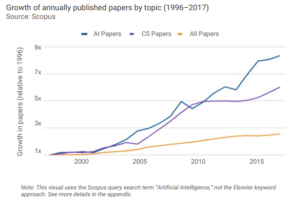
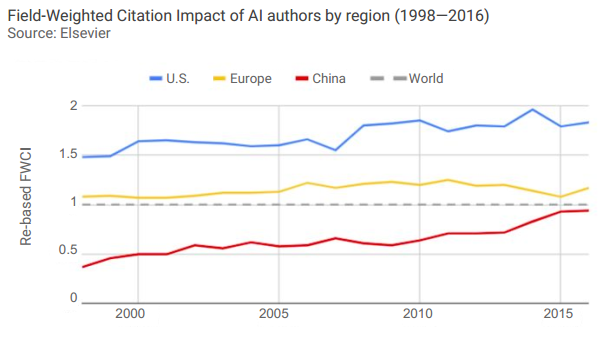
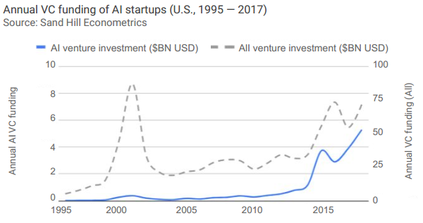

AI Index 2018 Annual Report
Objective
This report is to ground conversation about AI in data.
The AI Index is an effort to track, collate, distill, and visualize data relating to artificial intelligence. It aspires to be a comprehensive resource of data and analysis for policymakers, researchers, executives, journalists, and the general public to develop intuitions about the complex field of AI.
Summary
The report aggregates a diverse set of metrics, and makes the underlying data easily accessible to the general public. The AI Index Report is broken into 4 large sections:
- Volume of Activity: 活动量及其活跃程度， 或者叫领域活力，是一种量的关系研究，The Volume of Activity metrics capture the "how much" aspects of the field, like attendance at AI conferences and VC investments into startups developing AI systems. The report investigates the following aspects:
- Research：Published Papers，Course Enrollment，Participation，Robot Software
- Industry：Startups / Investment，Jobs，Patents，AI Adoption Survey，Earnings Calls，Robot Installations
- Open Source Software：GitHub Project Statistics
- Public Interest：Sentiment of Media Coverage，Government mentions
- Technical Performance: 技术表现优劣，是一种质的关系研究， The Technical Performance metrics capture the "how good" aspects; for example, how well computers can understand images and prove mathematical theorems.
- Vision
- Natural Language Understanding
- Derivative Measures: 衍生测量，We investigate the relationship between trends. We also introduce an exploratory measure, the AI Vibrancy Index (AI活力指数), that combines trends across academia and industry to quantify the liveliness of AI as a field.
- Towards Human Performance: 是否达到人类智能水平，We outline a short list of notable areas where AI systems have made significant progress towards matching or exceeding human performance. We also discuss the difficulties of such comparisons.
Statistics
- AI outpaces CS

- Europe 28% is the largest publisher of AI papers. In 2017, 28% of AI papers on Scopus were affiliated with European authors, followed by China (25%) and the U.S. (17%).

- US authors' work have higher quality while the works from China have lower quality.

- AI startups have a faster growing speed.

- The increasing speed for VC funding for U.S. AI startups is faster than that for VC funding for all active startups.

Reference
- The report is from https://aiindex.org/
-
The detailed report could be found at http://cdn.aiindex.org/2018/AI%20Index%202018%20Annual%20Report.pdf
-
For reference, use the following:
- Yoav Shoham, Raymond Perrault, Erik Brynjolfsson, Jack Clark, James Manyika, Juan Carlos Niebles, Terah Lyons, John Etchemendy, Barbara Grosz and Zoe Bauer, "The AI Index 2018 Annual Report”, AI Index Steering Committee, Human-Centered AI Initiative, Stanford University, Stanford, CA, December 2018.